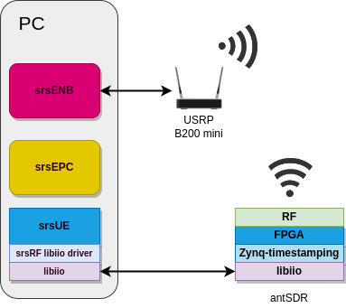

Application Note: End-to-End 4G testing with AntSDR¶
Overview¶
Hardware and Software Requirements¶
For this application note, the following hardware and software will be used:
Dell XPS13 with Ubuntu 20.04.4
USRP B200 mini
AntSDR with custom SRS bitstream
srsRAN
SRS Zynq timestamping
Analog Devices libiio and libad9361 software libraries
Prerequisites¶
1. You need to generate the custom SRS timestamp bitstream and to load it in the board (see the MicroPhase AntSDR project build section for more details).
Install srsRAN dependencies:
sudo apt-get install build-essential cmake libfftw3-dev libmbedtls-dev libboost-program-options-dev libconfig++-dev libsctp-dev
3. Install the libiio software library (see Analog Devices libiio wiki and libad9361-iio repository for the full instructions).
Building and configuring srsRAN¶
Set the board IP, the frequency offset and the RX gain for the UE:
export BOARD_IP="192.168.1.10"
export FREQ_OFFSET="0"
export RX_GAIN="50"
export TIME_ADV_NSAMPLES="0"
NOTE (1): we advise starting with FREQ_OFFSET=”0” and TIME_ADV_NSAMPLES=”0” and then manually adjusting them as required by the specific utilized hardware setup, in order to minimize the CFO and ensure a good time-alignment between eNB and UE.
NOTE (2): the AntSDR bitsream has been built by default to implement an internal buffering stage in the timestamped DAC path supporting storage of up to 10x 8000 sample-packets coming from the CPU - that is, according to values set for the CONFIG.PARAM_BUFFER_LENGTH and CONFIG.PARAM_MAX_DMA_PACKET_LENGTH parameters of the dac_fifo_timestamp_enabler block in the board’s system.tcl script, which would theoretically enable storing 10 ms worth of signal up to 5 MHz BW (i.e., 7680 samples per subframe). Nevertheless, by default the RF IIO driver uses DMA packets of 1920 samples - that is, 1 ms (one subframe) worth of signal for 1.4 MHz BW.
2. Execute the initialization script. It will compile the srsRAN stack as well as the RF drivers utilized by the Zynq timestamping solution. Moreover, it will also modify the default srsenb and srsue configuration with the parameter values defined above.
git clone https://github.com/srsran/zynq_timestamping.git --recursive
cd app
./prepare.sh
srsENB¶
Check the following parameters in bin_app/srsue/enb.conf.
In enb.conf:
[enb]
n_prb = 6
[rf]
rx_gain = 80
[expert]
max_prach_offset_us = 1000
lte_sample_rates = true
In sib.conf:
prach_freq_offset = 0
zero_correlation_zone_config = 0
srsUE¶
The following parameters have been configured with prepare.sh script: freq_offset, rx_gain, time_adv_nsamples, continuous_tx, ndevice_args, nof_phy_threads and lte_sample_rates.
Running¶
Network Namespace Creation¶
Let’s start with creating a new network namespace called “ue1” for the (first) UE:
sudo ip netns add ue1
To verify the new “ue1” netns exists, run:
sudo ip netns list
Running the EPC¶
Now let’s start the EPC. This will create a TUN device in the default network namespace and therefore needs root permissions.
cd ./bin_app/srsepc; sudo ./srsepc ./epc.conf
Running the eNodeB¶
Let’s now launch the eNodeB. In our test setup, the eNodeB uses an USRP B200 mini wit serial number 318A396 (replace the serial as required by your setup): .. code:
cd ./bin_app/srsenb; sudo nice -20 ./srsenb ./enb.conf --rf.device_name=uhd --rf.device_args=serial=318A396
Running the UE¶
Lastly we can launch the UE, again with root permissions to create the TUN device.
sudo LD_LIBRARY_PATH=./bin_app nice -20 ./bin_app/srsue/srsue ./bin_app/srsue/ue.conf --gw.netns=ue1
The last command should start the UE and attach it to the core network. The UE will be assigned an IP address in the configured range (e.g. 172.16.0.2).
Traffic Generation¶
To exchange traffic in the downlink direction, i.e. from the the EPC, just run ping or iperf as usual on the command line, e.g.:
ping 172.16.0.2
In order to generate traffic in the uplink direction it is important to run the ping command in the UE’s network namespace.
sudo ip netns exec ue1 ping 172.16.0.1
Troubleshooting¶
Make sure antsdr IP is correctly configured in ue.conf, for example:
[rf]
device_name = iio
device_args = n_prb=6,context=ip:10.12.1.201
Limitations¶
Number of PRB is limited to 6.